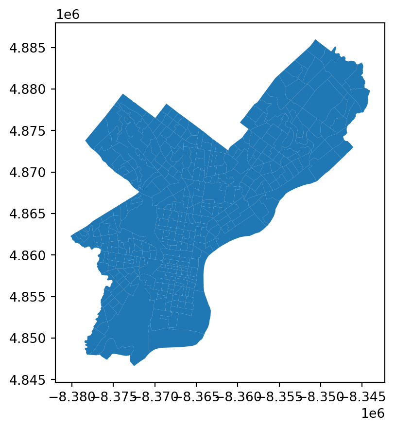
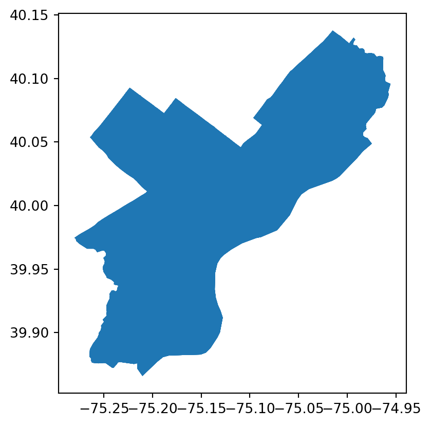

import pandas as pd
import geopandas as gpd
import matplotlib.pyplot as plt
import seaborn as sns
import cenpy as cp
import cenpy.tiger as tigerChapter 1: Indicators for Transit-Oriented Development (TOD)
1.1 Why Start With Indicators?
- Summary: Indicators provide simple insights into complex phenomena and are critical for conveying nuanced context to non-technical audiences. Good indicators are relatable, simple, relative, and generate more questions than answers.
1.1.1 Mapping & scale bias in areal aggregate data
Data Visualization as a Communication Tool: Data visualization is crucial for data scientists as it can convey complex information effectively. However, visualizations, especially maps, can sometimes be misleading.
Influence of Color on Map Narratives: The way colors are assigned to data on a map can significantly affect the narrative. For example, mapping median household income in Philadelphia shows increased incomes in Center City, but this perception is partly influenced by the color scheme used.
Map Breaks and Distribution: Different approaches to setting map breaks, such as equal interval breaks and quintile breaks,* can alter the narrative of a map.* Quintile breaks, which divide data into five equal parts, can provide a clearer contrast in income distribution across the city compared to equal interval breaks.
Ecological Fallacy and Scale Bias: Using summary statistics like mean or median to represent individual data points can lead to ecological fallacy 1. This bias occurs when conclusions about individual behavior are drawn from aggregate data. The assumption that a census tract represents a homogeneous neighborhood can further exacerbate this bias.
Modifiable Areal Unit Problem (MAUP): The MAUP refers to the bias introduced when data is aggregated into arbitrarily defined spatial units, such as census tracts. This can lead to misleading interpretations of the data.
Consideration of Scale Bias: Scale bias is a critical factor to consider when creating and interpreting indicators. While it’s challenging to eliminate scale bias entirely, acknowledging and understanding its impact is essential for producing useful analytics.
1.2 Setup
- Python Libraries: For this analysis, we will use
pandasfor data manipulation,geopandasfor spatial data handling,matplotlibandseabornfor visualization, andcenpyfor accessing Census data.
1.2.1 Census Data: Download and Wrangle
Accessing Census Data: We can use the cenpy library to access Census data for Philadelphia. The variables of interest include total population, number of white residents, median household income, median contract rent, total living in poverty, and bachelor’s degree holders.
variables = {
'B25026_001E': 'TotalPop',
'B02001_002E': 'NumberWhites',
'B15001_050E': 'TotalFemaleBachelors',
'B15001_009E': 'TotalMaleBacheors',
'B19013_001E': 'MedHHInc',
'B25058_001E': 'MedRent',
'B06012_002E': 'TotalPoverty'
}acs = cp.remote.APIConnection('ACSDT5Y2017')tiger.available()
acs.set_mapservice('tigerWMS_ACS2017')Connection to ACS 5-Year Detailed Tables(ID: https://api.census.gov/data/id/ACSDT5Y2017)
With MapServer: Census ACS 2017 WMSacs.mapservice
acs.mapservice.layers[(ESRILayer) 2010 Census Public Use Microdata Areas,
(ESRILayer) 2010 Census Public Use Microdata Areas Labels,
(ESRILayer) 2010 Census ZIP Code Tabulation Areas,
(ESRILayer) 2010 Census ZIP Code Tabulation Areas Labels,
(ESRILayer) Tribal Census Tracts,
(ESRILayer) Tribal Census Tracts Labels,
(ESRILayer) Tribal Block Groups,
(ESRILayer) Tribal Block Groups Labels,
(ESRILayer) Census Tracts,
(ESRILayer) Census Tracts Labels,
(ESRILayer) Census Block Groups,
(ESRILayer) Census Block Groups Labels,
(ESRILayer) Unified School Districts,
(ESRILayer) Unified School Districts Labels,
(ESRILayer) Secondary School Districts,
(ESRILayer) Secondary School Districts Labels,
(ESRILayer) Elementary School Districts,
(ESRILayer) Elementary School Districts Labels,
(ESRILayer) Estates,
(ESRILayer) Estates Labels,
(ESRILayer) County Subdivisions,
(ESRILayer) County Subdivisions Labels,
(ESRILayer) Subbarrios,
(ESRILayer) Subbarrios Labels,
(ESRILayer) Consolidated Cities,
(ESRILayer) Consolidated Cities Labels,
(ESRILayer) Incorporated Places,
(ESRILayer) Incorporated Places Labels,
(ESRILayer) Census Designated Places,
(ESRILayer) Census Designated Places Labels,
(ESRILayer) Alaska Native Regional Corporations,
(ESRILayer) Alaska Native Regional Corporations Labels,
(ESRILayer) Tribal Subdivisions,
(ESRILayer) Tribal Subdivisions Labels,
(ESRILayer) Federal American Indian Reservations,
(ESRILayer) Federal American Indian Reservations Labels,
(ESRILayer) Off-Reservation Trust Lands,
(ESRILayer) Off-Reservation Trust Lands Labels,
(ESRILayer) State American Indian Reservations,
(ESRILayer) State American Indian Reservations Labels,
(ESRILayer) Hawaiian Home Lands,
(ESRILayer) Hawaiian Home Lands Labels,
(ESRILayer) Alaska Native Village Statistical Areas,
(ESRILayer) Alaska Native Village Statistical Areas Labels,
(ESRILayer) Oklahoma Tribal Statistical Areas,
(ESRILayer) Oklahoma Tribal Statistical Areas Labels,
(ESRILayer) State Designated Tribal Statistical Areas,
(ESRILayer) State Designated Tribal Statistical Areas Labels,
(ESRILayer) Tribal Designated Statistical Areas,
(ESRILayer) Tribal Designated Statistical Areas Labels,
(ESRILayer) American Indian Joint-Use Areas,
(ESRILayer) American Indian Joint-Use Areas Labels,
(ESRILayer) 115th Congressional Districts,
(ESRILayer) 115th Congressional Districts Labels,
(ESRILayer) 2016 State Legislative Districts - Upper,
(ESRILayer) 2016 State Legislative Districts - Upper Labels,
(ESRILayer) 2016 State Legislative Districts - Lower,
(ESRILayer) 2016 State Legislative Districts - Lower Labels,
(ESRILayer) Census Divisions,
(ESRILayer) Census Divisions Labels,
(ESRILayer) Census Regions,
(ESRILayer) Census Regions Labels,
(ESRILayer) 2010 Census Urbanized Areas,
(ESRILayer) 2010 Census Urbanized Areas Labels,
(ESRILayer) 2010 Census Urban Clusters,
(ESRILayer) 2010 Census Urban Clusters Labels,
(ESRILayer) Combined New England City and Town Areas,
(ESRILayer) Combined New England City and Town Areas Labels,
(ESRILayer) New England City and Town Area Divisions,
(ESRILayer) New England City and Town Area Divisions Labels,
(ESRILayer) Metropolitan New England City and Town Areas,
(ESRILayer) Metropolitan New England City and Town Areas Labels,
(ESRILayer) Micropolitan New England City and Town Areas,
(ESRILayer) Micropolitan New England City and Town Areas Labels,
(ESRILayer) Combined Statistical Areas,
(ESRILayer) Combined Statistical Areas Labels,
(ESRILayer) Metropolitan Divisions,
(ESRILayer) Metropolitan Divisions Labels,
(ESRILayer) Metropolitan Statistical Areas,
(ESRILayer) Metropolitan Statistical Areas Labels,
(ESRILayer) Micropolitan Statistical Areas,
(ESRILayer) Micropolitan Statistical Areas Labels,
(ESRILayer) States,
(ESRILayer) States Labels,
(ESRILayer) Counties,
(ESRILayer) Counties Labels]acs.mapservice.layers[8]
acs.mapservice.layers[8].variables
geodata = acs.mapservice.query(layer=8, where="STATE = '42' AND COUNTY = '101'")
geodata.head()| MTFCC | OID | GEOID | STATE | COUNTY | TRACT | BASENAME | NAME | LSADC | FUNCSTAT | AREALAND | AREAWATER | CENTLAT | CENTLON | INTPTLAT | INTPTLON | OBJECTID | geometry | |
|---|---|---|---|---|---|---|---|---|---|---|---|---|---|---|---|---|---|---|
| 0 | G5020 | 20790510128341 | 42101000100 | 42 | 101 | 000100 | 1 | Census Tract 1 | CT | S | 704917 | 0 | +39.9523827 | -075.1466629 | +39.9523827 | -075.1466629 | 40975 | POLYGON ((-8365905.972 4858674.427, -8365885.3... |
| 1 | G5020 | 20790510128392 | 42101000200 | 42 | 101 | 000200 | 2 | Census Tract 2 | CT | S | 382481 | 0 | +39.9553999 | -075.1569774 | +39.9553999 | -075.1569774 | 40976 | POLYGON ((-8367094.196 4859452.933, -8367072.1... |
| 2 | G5020 | 20790510128432 | 42101000300 | 42 | 101 | 000300 | 3 | Census Tract 3 | CT | S | 546270 | 22680 | +39.9571482 | -075.1712337 | +39.9569074 | -075.1712767 | 40977 | POLYGON ((-8368992.305 4860135.356, -8368934.1... |
| 3 | G5020 | 207903717001433 | 42101000401 | 42 | 101 | 000401 | 4.01 | Census Tract 4.01 | CT | S | 216838 | 15884 | +39.9541571 | -075.1765866 | +39.9541871 | -075.1758082 | 5715 | POLYGON ((-8369100.507 4859112.102, -8369024.1... |
| 4 | G5020 | 207903717001432 | 42101000402 | 42 | 101 | 000402 | 4.02 | Census Tract 4.02 | CT | S | 303681 | 0 | +39.9532973 | -075.1686952 | +39.9532973 | -075.1686952 | 18311 | POLYGON ((-8368261.381 4859050.821, -8368260.4... |
geodata.plot()
acs.variables.head()| label | concept | predicateType | group | limit | predicateOnly | hasGeoCollectionSupport | attributes | required | values | |
|---|---|---|---|---|---|---|---|---|---|---|
| for | Census API FIPS 'for' clause | Census API Geography Specification | fips-for | N/A | 0 | True | NaN | NaN | NaN | NaN |
| in | Census API FIPS 'in' clause | Census API Geography Specification | fips-in | N/A | 0 | True | NaN | NaN | NaN | NaN |
| ucgid | Uniform Census Geography Identifier clause | Census API Geography Specification | ucgid | N/A | 0 | True | True | NaN | NaN | NaN |
| B24022_060E | Estimate!!Total!!Female!!Service occupations!!... | SEX BY OCCUPATION AND MEDIAN EARNINGS IN THE P... | int | B24022 | 0 | NaN | NaN | B24022_060EA,B24022_060M,B24022_060MA | NaN | NaN |
| B19001B_014E | Estimate!!Total!!$100,000 to $124,999 | HOUSEHOLD INCOME IN THE PAST 12 MONTHS (IN 201... | int | B19001B | 0 | NaN | NaN | B19001B_014EA,B19001B_014M,B19001B_014MA | NaN | NaN |
acs.geographies['fips'].head()| name | geoLevelDisplay | referenceDate | requires | wildcard | optionalWithWCFor | |
|---|---|---|---|---|---|---|
| 0 | us | 010 | 2017-01-01 | NaN | NaN | NaN |
| 1 | region | 020 | 2017-01-01 | NaN | NaN | NaN |
| 2 | division | 030 | 2017-01-01 | NaN | NaN | NaN |
| 3 | state | 040 | 2017-01-01 | NaN | NaN | NaN |
| 4 | county | 050 | 2017-01-01 | [state] | [state] | state |
list(variables.keys())['B25026_001E',
'B02001_002E',
'B15001_050E',
'B15001_009E',
'B19013_001E',
'B25058_001E',
'B06012_002E']data = acs.query(cols= list(variables.keys())
, geo_unit = 'tract:*', geo_filter = {'state':'42' , 'county':'101'})
data| B25026_001E | B02001_002E | B15001_050E | B15001_009E | B19013_001E | B25058_001E | B06012_002E | state | county | tract | |
|---|---|---|---|---|---|---|---|---|---|---|
| 0 | 6705 | 458 | 33 | 0 | 33344 | 671 | 2153 | 42 | 101 | 006700 |
| 1 | 3178 | 90 | 12 | 0 | 28264 | 638 | 770 | 42 | 101 | 007000 |
| 2 | 4095 | 917 | 69 | 7 | 40947 | 845 | 1101 | 42 | 101 | 008000 |
| 3 | 4152 | 51 | 45 | 0 | 17149 | 379 | 1821 | 42 | 101 | 009400 |
| 4 | 3135 | 182 | 0 | 7 | 21788 | 644 | 1195 | 42 | 101 | 009500 |
| ... | ... | ... | ... | ... | ... | ... | ... | ... | ... | ... |
| 379 | 7304 | 5189 | 82 | 21 | 43804 | 710 | 1321 | 42 | 101 | 033600 |
| 380 | 6279 | 5666 | 16 | 16 | 63750 | 1043 | 358 | 42 | 101 | 036303 |
| 381 | 2197 | 1527 | 28 | 10 | 109609 | 2181 | 106 | 42 | 101 | 036600 |
| 382 | 4328 | 1591 | 9 | 0 | 19656 | 547 | 2133 | 42 | 101 | 029900 |
| 383 | 4801 | 140 | 0 | 0 | 26232 | 349 | 1432 | 42 | 101 | 027700 |
384 rows × 10 columns
geodata.columnsIndex(['MTFCC', 'OID', 'GEOID', 'STATE', 'COUNTY', 'TRACT', 'BASENAME', 'NAME',
'LSADC', 'FUNCSTAT', 'AREALAND', 'AREAWATER', 'CENTLAT', 'CENTLON',
'INTPTLAT', 'INTPTLON', 'OBJECTID', 'geometry'],
dtype='object')data.columnsIndex(['B25026_001E', 'B02001_002E', 'B15001_050E', 'B15001_009E',
'B19013_001E', 'B25058_001E', 'B06012_002E', 'state', 'county',
'tract'],
dtype='object')Now, we are going to append geodata to census data.
tract17 = pd.merge(data, geodata, left_on='tract', right_on='TRACT')
tract17.head()| B25026_001E | B02001_002E | B15001_050E | B15001_009E | B19013_001E | B25058_001E | B06012_002E | state | county | tract | ... | LSADC | FUNCSTAT | AREALAND | AREAWATER | CENTLAT | CENTLON | INTPTLAT | INTPTLON | OBJECTID | geometry | |
|---|---|---|---|---|---|---|---|---|---|---|---|---|---|---|---|---|---|---|---|---|---|
| 0 | 6705 | 458 | 33 | 0 | 33344 | 671 | 2153 | 42 | 101 | 006700 | ... | CT | S | 1001468 | 0 | +39.9242475 | -075.2242816 | +39.9242475 | -075.2242816 | 7609 | POLYGON ((-8374836.689 4854899.950, -8374750.9... |
| 1 | 3178 | 90 | 12 | 0 | 28264 | 638 | 770 | 42 | 101 | 007000 | ... | CT | S | 469047 | 0 | +39.9351850 | -075.2214770 | +39.9351850 | -075.2214770 | 33751 | POLYGON ((-8374204.728 4856502.019, -8374162.0... |
| 2 | 4095 | 917 | 69 | 7 | 40947 | 845 | 1101 | 42 | 101 | 008000 | ... | CT | S | 430891 | 0 | +39.9506586 | -075.2268464 | +39.9506586 | -075.2268464 | 28038 | POLYGON ((-8374706.223 4858379.218, -8374705.7... |
| 3 | 4152 | 51 | 45 | 0 | 17149 | 379 | 1821 | 42 | 101 | 009400 | ... | CT | S | 366714 | 0 | +39.9632709 | -075.2322437 | +39.9632709 | -075.2322437 | 59933 | POLYGON ((-8375308.573 4860435.266, -8375304.4... |
| 4 | 3135 | 182 | 0 | 7 | 21788 | 644 | 1195 | 42 | 101 | 009500 | ... | CT | S | 319096 | 0 | +39.9658712 | -075.2379141 | +39.9658712 | -075.2379141 | 59934 | POLYGON ((-8375726.132 4860644.844, -8375690.7... |
5 rows × 28 columns
tract17.rename(columns=variables, inplace=True)
tract17| TotalPop | NumberWhites | TotalFemaleBachelors | TotalMaleBacheors | MedHHInc | MedRent | TotalPoverty | state | county | tract | ... | LSADC | FUNCSTAT | AREALAND | AREAWATER | CENTLAT | CENTLON | INTPTLAT | INTPTLON | OBJECTID | geometry | |
|---|---|---|---|---|---|---|---|---|---|---|---|---|---|---|---|---|---|---|---|---|---|
| 0 | 6705 | 458 | 33 | 0 | 33344 | 671 | 2153 | 42 | 101 | 006700 | ... | CT | S | 1001468 | 0 | +39.9242475 | -075.2242816 | +39.9242475 | -075.2242816 | 7609 | POLYGON ((-8374836.689 4854899.950, -8374750.9... |
| 1 | 3178 | 90 | 12 | 0 | 28264 | 638 | 770 | 42 | 101 | 007000 | ... | CT | S | 469047 | 0 | +39.9351850 | -075.2214770 | +39.9351850 | -075.2214770 | 33751 | POLYGON ((-8374204.728 4856502.019, -8374162.0... |
| 2 | 4095 | 917 | 69 | 7 | 40947 | 845 | 1101 | 42 | 101 | 008000 | ... | CT | S | 430891 | 0 | +39.9506586 | -075.2268464 | +39.9506586 | -075.2268464 | 28038 | POLYGON ((-8374706.223 4858379.218, -8374705.7... |
| 3 | 4152 | 51 | 45 | 0 | 17149 | 379 | 1821 | 42 | 101 | 009400 | ... | CT | S | 366714 | 0 | +39.9632709 | -075.2322437 | +39.9632709 | -075.2322437 | 59933 | POLYGON ((-8375308.573 4860435.266, -8375304.4... |
| 4 | 3135 | 182 | 0 | 7 | 21788 | 644 | 1195 | 42 | 101 | 009500 | ... | CT | S | 319096 | 0 | +39.9658712 | -075.2379141 | +39.9658712 | -075.2379141 | 59934 | POLYGON ((-8375726.132 4860644.844, -8375690.7... |
| ... | ... | ... | ... | ... | ... | ... | ... | ... | ... | ... | ... | ... | ... | ... | ... | ... | ... | ... | ... | ... | ... |
| 379 | 7304 | 5189 | 82 | 21 | 43804 | 710 | 1321 | 42 | 101 | 033600 | ... | CT | S | 1153477 | 0 | +40.0614797 | -075.0592347 | +40.0614797 | -075.0592347 | 33748 | POLYGON ((-8356539.773 4874784.998, -8356411.7... |
| 380 | 6279 | 5666 | 16 | 16 | 63750 | 1043 | 358 | 42 | 101 | 036303 | ... | CT | S | 2555016 | 0 | +40.1051803 | -074.9702251 | +40.1051803 | -074.9702251 | 22366 | POLYGON ((-8347015.945 4881106.829, -8346996.7... |
| 381 | 2197 | 1527 | 28 | 10 | 109609 | 2181 | 106 | 42 | 101 | 036600 | ... | CT | S | 1004520 | 1426274 | +39.9448587 | -075.1389514 | +39.9469291 | -075.1404797 | 72014 | POLYGON ((-8365255.643 4855808.086, -8365233.3... |
| 382 | 4328 | 1591 | 9 | 0 | 19656 | 547 | 2133 | 42 | 101 | 029900 | ... | CT | S | 591446 | 0 | +40.0131465 | -075.0747147 | +40.0131465 | -075.0747147 | 57263 | POLYGON ((-8357962.770 4867672.142, -8357888.0... |
| 383 | 4801 | 140 | 0 | 0 | 26232 | 349 | 1432 | 42 | 101 | 027700 | ... | CT | S | 543124 | 0 | +40.0505407 | -075.1512097 | +40.0505407 | -075.1512097 | 71681 | POLYGON ((-8366544.612 4873096.939, -8366541.1... |
384 rows × 28 columns
tract17=gpd.GeoDataFrame(tract17, geometry='geometry')
tract17.plot()Data Wrangling: We can use pandas to manipulate the data, such as renaming columns, calculating rates, and adjusting for inflation.
1.2.2 Transit Open Data: Download and Wrangle
Accessing Transit Data: Suppose we have a GeoJSON file with the locations of subway stops in Philadelphia. We can use geopandas to read this data.
septa_stops = gpd.read_file("https://raw.githubusercontent.com/urbanSpatial/Public-Policy-Analytics-Landing/0c6e18b06d1675858dff1741a9e4a363bfa761db/DATA/Chapter1/PHL_CT00.geojson", geometry='geometry')
print(septa_stops.head()) GEOID NAME variable value \
0 42101000100 Census Tract 1 P001001 2576.0
1 42101000100 Census Tract 1 P006002 2095.0
2 42101000100 Census Tract 1 PCT025050 48.0
3 42101000100 Census Tract 1 PCT025009 64.0
4 42101000100 Census Tract 1 P053001 48886.0
geometry
0 MULTIPOLYGON (((-75.14882 39.95631, -75.14792 ...
1 MULTIPOLYGON (((-75.14882 39.95631, -75.14792 ...
2 MULTIPOLYGON (((-75.14882 39.95631, -75.14792 ...
3 MULTIPOLYGON (((-75.14882 39.95631, -75.14792 ...
4 MULTIPOLYGON (((-75.14882 39.95631, -75.14792 ... septa_stops.plot()
1.2.3 Relating Tracts & Subway Stops in Space
We can use geopandas to perform spatial operations such as buffering, intersection, and spatial joins to relate Census tracts to subway stops.
buffered_stops = septa_stops.buffer(2640) # Buffer in feet
buffered_stops.head/var/folders/ls/4rhr7kfj5nd_v0fn499s11hm0000gn/T/ipykernel_48621/543701200.py:1: UserWarning:
Geometry is in a geographic CRS. Results from 'buffer' are likely incorrect. Use 'GeoSeries.to_crs()' to re-project geometries to a projected CRS before this operation.
<bound method NDFrame.head of 0 POLYGON ((175.14718 2668.06436, 199.92679 2664...
1 POLYGON ((175.14718 2668.06436, 199.92679 2664...
2 POLYGON ((175.14718 2668.06436, 199.92679 2664...
3 POLYGON ((175.14718 2668.06436, 199.92679 2664...
4 POLYGON ((175.14718 2668.06436, 199.92679 2664...
...
2662 POLYGON ((-2598.72985 810.29345, -2600.12020 8...
2663 POLYGON ((-2598.72985 810.29345, -2600.12020 8...
2664 POLYGON ((-2598.72985 810.29345, -2600.12020 8...
2665 POLYGON ((-2598.72985 810.29345, -2600.12020 8...
2666 POLYGON ((-2598.72985 810.29345, -2600.12020 8...
Length: 2667, dtype: geometry>tracts_near_stops = gpd.sjoin(census_data, buffered_stops, op=‘intersects’)
tracts_near_stops.head()
```
Footnotes
The ecological fallacy is a logical error that occurs when conclusions about individual behavior are drawn from aggregate data. It happens when researchers make inferences about the behavior or characteristics of individuals based on data that has been collected and analyzed at a group level, such as census tracts, neighborhoods, or countries.
For example, if data shows that a particular neighborhood has a high average income, it would be an ecological fallacy to assume that every individual in that neighborhood is wealthy. In reality, the neighborhood might have a mix of income levels, but the average is skewed by a few very high-income residents.
The ecological fallacy highlights the importance of being cautious when interpreting aggregate data and not making unwarranted assumptions about individual characteristics or behaviors based on group-level statistics.↩︎